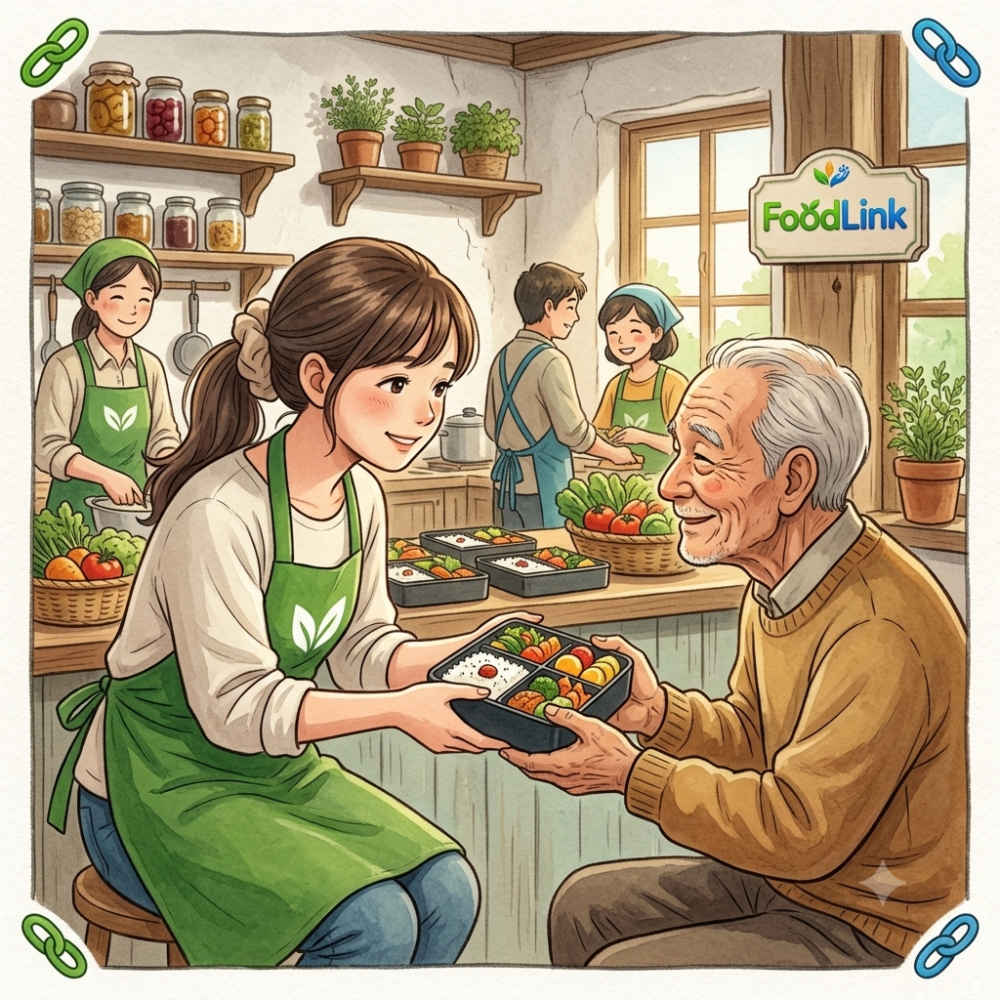
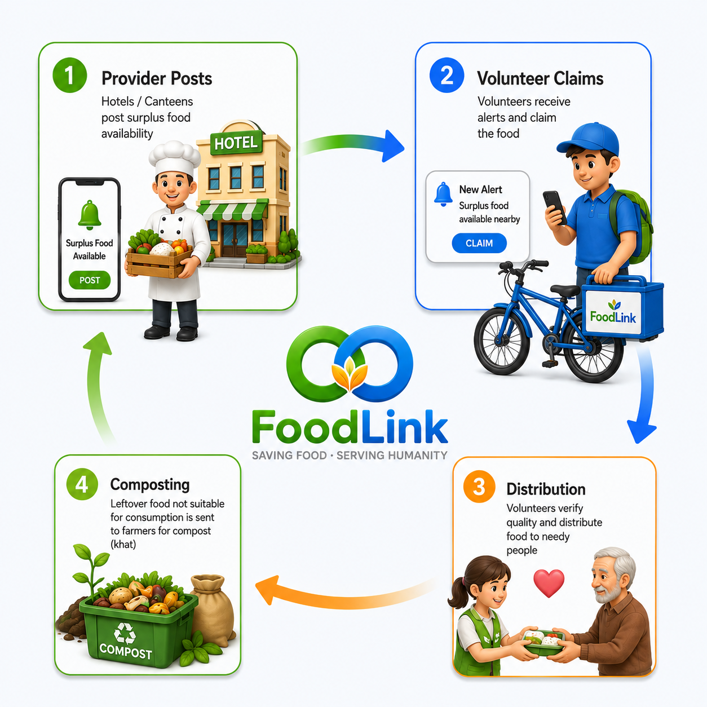
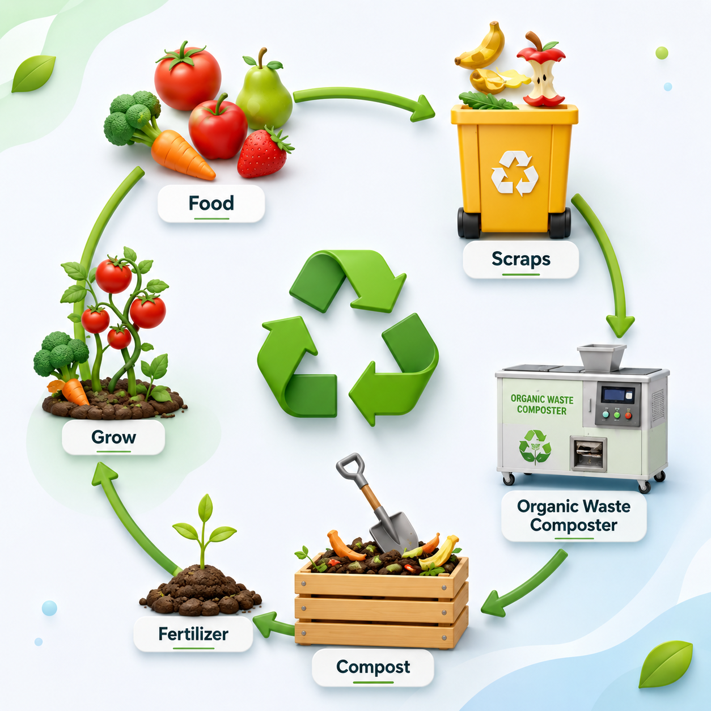

Bridging the gap between surplus food providers, NGOs, volunteers, and eco-friendly composting solutions.
Every day, a large amount of fresh food is wasted by hotels, restaurants, canteens, messes, and events, while many people still struggle to get a proper meal. Unused organic waste leads to environmental hazards and landfill buildup.
Food wasted daily before reaching the needy
Higher greenhouse gas emissions from landfills

Sustainably manage surplus raw crops and redirect bio-waste back into rich nutrient-rich fertilizer.
Instantly post excess edible cooked food before it spoils to reach trusted community partners.
Receive live updates, claim edible surplus food immediately, and distribute it directly to families in need.
Ensure non-edible organic food leftovers are transformed cleanly into eco-friendly compost.

Hotels or canteens upload food quantity, meal type, and safe consumption time window.
Nearby verified volunteers accept the listing and coordinate quick pickup.
Fresh, safe food reaches families and individuals quickly.
Any non-edible food are rerouted to compost units for agricultural reuse.
Our machine learning model predicts daily food demand using historical sales data, day of the week, holidays, festivals, weather forecasts, and meal timings.
Non-edible food waste should never end up emitting methane in landfills. We partner with local organic composting units to turn leftover organic material into rich fertilizers for agricultural food production.
Learn More About Composting
Student's at KIT's College of Engineering, Kolhapur. We are dedicated to building tech solutions that tackle real-world food insecurity and waste problems.
Be part of the movement reducing hunger and protecting our planet.